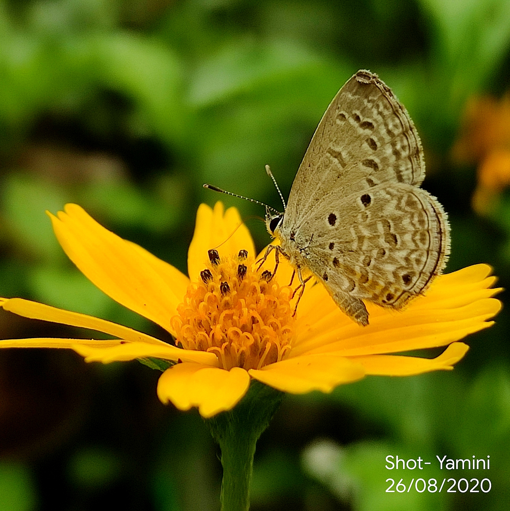

Butterfly And Flowers

It was evening of the day. I was garderning and observed few butterflies hovering over the flowers, though they were little, they looked beautiful and cute. Butterfly and flowers...it was quite the scene!
Nature around us always inspires us to capture it's beauty! One need not to visit beautiful places to capture beautiful sceneries, it's in the way you view it!
Create New Post
It was evening of the day. I was garderning and observed few butterflies hovering over the flowers, though they were little, they looked beautiful and cute. Butterfly and flowers...it was quite the scene!

Rain is a good friend of plants...the new germinations were so happy after it was rained and I couldn't stop my hands from capturing those lively green plants.

It was one of the beautiful sunsets that I ever have witnessed and ofcourse camera can't do justice for the real scenery. They say sun is the hero and the source of energy. It motivates us by it's warm sunshine and inspires by beautiful sets! gives us strong hope for next day.

As dusk was falling, encountered this beautiful color of sky and the sun was behind the clouds and providing us another moment to feel warm.